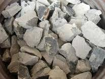

Non mi era mai capitato di vedere in tale quantità questo materiale aderente come una spessa crosta metallica su un pezzo di carburo di calcio, ma solo come piccole inclusioni.
Il CaC2 commerciale, per coloro che non l'avessero mai visto, si presenta come dei "sassi" irregolari e spigolosi di colore da grigio chiaro (quasi nero se impuro per carbone residuo); se la frattura è freschissima il colore è rossastro.

La forma dei frammenti deriva dalla frantumazione di una massa fusa al forno elettrico a oltre 2000° e i pezzi rapidamente imbianchiscono e sfioriscono per reazione con l'umidità atmosferica e vanno conservati in recipienti a tenuta ermetica.
E' interessante questo vecchio e strabico materiale; mi piace perchè strizza l'occhio da una parte alla chimica inorganica e dall'altra all'organica, addirittura quella col triplo legame tra due atomi di carbonio: infatti è lo storico padre dell'acetilene H-C≡C-H.
Wohler ottenne il CaC2 la prima volta un secolo e mezzo fa, scaldando al rosso carbone assieme a una lega di calcio e zinco; risale ad una trentina di anni dopo il primo brevetto che rispecchia ancora l'attuale procedimento industriale, consistente nel riscaldare al forno elettrico con elettrodi di grafite una miscela di calce viva (ossido di calcio CaO) e carbone.
In funzione della composizione dei materiali di partenza si formano ovviamente anche molti altri prodotti secondari, che influiscono sulla purezza del carburo, che è di circa l'85%: e vi è così CaO (ossido di calcio residuo), CaS (solfuro), Ca3N2 (nitruro), SiC (carburo di silicio), Ca3P2 (fosfuro).
E' a causa soprattutto del fosfuro il caratteristico odore agliaceo dell'acetilene che si genera da carburo di calcio tecnico e acqua, dovuto alla presenza di fosfina, PH3.
Ma vi può essere anche qualche altra "impurezza".
Come mosta (molto malamente) l'immagine qui sotto, su un frammento di carburo ho trovato una significativa crosta eterogenea, di aspetto decisamente "metallico".

Purtroppo vedo che la foto non rende l'idea... ma credetemi che l'aspetto è proprio metallico, con tonalità leggermente piritica.
La parte bianca sottostante è il carburo, che si sta lentamente consumando a forza di estrarre lo strano pezzo dal contenitore per maneggiarlo.
La crosta in oggetto, formatasi durante la sintesi a causa di impurezze locali nel materiale di partenza, ha dimostrato di non reagire con l'acqua e addirittura con molta difficoltà con HCl bollente.
Incuriosito, ho condotto una analisi di massima, partendo da un dato iniziale fondamentale: la crosta era assolutamente ferromagnetica...
Ne ho sciolto un frammento in acqua regia, pur nella quale si è avuto un residuo insolubile.
La soluzione (inesorabilmente gialla, l'elemento 26 mi perseguita...) ha reagito come era logico a tutti i semplici test per il ferro.
Il residuo insolubile, trattato a caldo con acido fluoridrico, si è parzialmente sciolto dimostrando la presenza di silice, e quindi di silicio.
Si è avuto un ulteriore residuo nero insolubile anche in H2F2, quasi sicuramente SiC, carburo di silicio o silicio.
Questa resistentissima crosta metallica, che come dicevo non avevo mai visto in maniera così significativa, si è dimostrata quindi essenzialmente composta da una lega ferro-silicio, sicuramente originata da impurezze di minerali di ferro presenti nel calcare o nel coke utilizzati per la sintesi del carburo.
Una volta le fabbriche di CaC2 erano moltissime anche in Italia; al giorno d'oggi l'acetilene, che rimane una importantissima materia prima per l'industria chimica, si produce in tutt'altro modo (ved.) e le fabbriche stesse non esistono più o hanno cambiato destinazione.
Non ho quindi idea da dove possa giungere il pezzo in mio possesso, ma si tratterebbe solo di semplice curiosità.